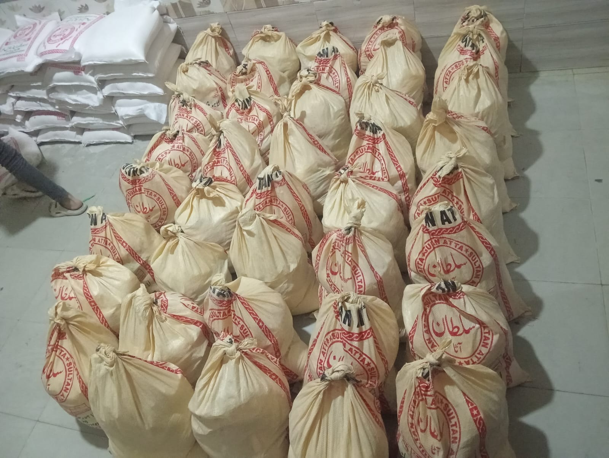

May 5, 2026 | Meher Welfare Trust
Food security & nutrition for every family
Food security is more than calories on a plate; it is predictability, dignity, and the ability for children to concentrate in school instead of coping with hunger. Meher Welfare Trust designs nutrition support programmes that combine emergency assistance with education—so families understand balanced meals, safe storage, and how to stretch limited resources without compromising health.
Rising prices and climate stress have pushed many households into difficult trade-offs between rent, medicine, and groceries. Our field teams document needs carefully so that family food assistance reaches those most at risk: widows, daily-wage households, and families supporting members with chronic illness. Where appropriate we coordinate with local suppliers to protect local economies while keeping quality high.
What our food programmes include
Typical interventions include staple ration packs, hot meals during acute crises, and targeted support for pregnant and nursing mothers. We emphasise humanitarian food aid that avoids stigma: neutral packaging, respectful queues, and female staff present when culturally required so everyone feels safe collecting support.

Beyond distribution days, volunteers conduct short nutrition awareness sessions covering iron-rich foods, hydration, and affordable protein sources. Feedback from communities shapes the next cycle of menus and portion sizes, because dignity and relevance matter as much as volume.
Partner with us against hunger
Your donations translate directly into kilograms of staples, fresh produce where logistics allow, and fuel for delivery routes. Corporate and diaspora partners can also sponsor named rounds of hunger relief in Pakistan while receiving clear reporting on reach and safeguards.
We invite readers to share this article with anyone looking for a transparent channel to fight food insecurity. For questions about zakat-eligible projects or in-kind contributions, please reach out via contact—our team responds as quickly as field schedules allow.
Meher Welfare Trust
We are a grassroots organisation focused on humanitarian relief, education, food security, and dignified support for families in Pakistan and among the diaspora. This article reflects our field learning and commitment to transparent, community-led programmes.